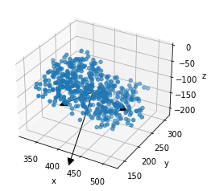
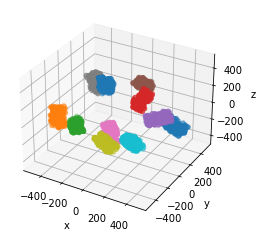

How to make a Other DNA Structure
Structures can also be built from paths, or as random placements.
Paths can be used to seed a measured geometry, while random placements serve well when generating isotropic DNA damage measurements
[1]:
import sys
from pathlib import Path
try:
# The voxelisation library produces the cubic voxelisation that
# can be used to build DNA
from fractaldna.structure_models import voxelisation as v
from fractaldna.structure_models import random_placements as rp
except (ImportError, ModuleNotFoundError):
sys.path.append(str(Path.cwd().parent.parent.parent))
from fractaldna.structure_models import voxelisation as v
from fractaldna.structure_models import random_placements as rp
import numpy as np
import matplotlib.pyplot as plt
from mpl_toolkits.mplot3d import Axes3D
Producing Voxels from Random Placements
This method generates a random collection of prisms inside a ball. It places candidate prisms in the volume of interest, ensuring there are no overlaps.
[2]:
placements = rp.generate_non_overlapping_prisms(
10, np.array([100, 100, 200]), 500, early_exit=-1, verbose=True
)
100%|██████████| 10/10 [00:00<00:00, 575.44it/s]
[3]:
# A single prism can be plotted as a diagnostic,
# using random points inside the prism
# Arrows show the cardinal axes of the prism
placements.prisms[0].to_plot(n=500, arrows=True)

[4]:
# Multiple prisms can be plotted together
fig = plt.figure()
ax = fig.add_subplot(111, projection="3d")
for prism in placements.prisms:
prism.to_plot(ax=ax)

[5]:
# And the output can be extracted as a Data Frame
placements.to_frame()
[5]:
| IDX | TYPE | POS_X | POS_Y | POS_Z | EUL_PSI | EUL_THETA | EUL_PHI | |
|---|---|---|---|---|---|---|---|---|
| 0 | 0 | prism | 415.348520 | 219.712351 | -114.423994 | 2.839435 | 0.720987 | -2.984271 |
| 1 | 1 | prism | -432.076027 | -237.553875 | -24.083225 | -2.963485 | 0.275591 | 2.982139 |
| 2 | 2 | prism | -159.592674 | -392.947419 | 78.121664 | 1.882360 | 0.062193 | -2.492313 |
| 3 | 3 | prism | 125.804152 | 179.063631 | 112.421050 | 0.192454 | 0.851023 | 1.541503 |
| 4 | 4 | prism | 396.528057 | -50.657998 | 135.188644 | 1.464938 | -0.688803 | 2.440295 |
| 5 | 5 | prism | 23.628732 | 402.649308 | 123.393114 | -2.756459 | -0.737142 | 0.798266 |
| 6 | 6 | prism | -137.302603 | 106.387584 | -328.511381 | -0.239809 | -0.454546 | -0.187761 |
| 7 | 7 | prism | -263.391776 | 91.491565 | 242.850182 | -3.066083 | -0.120225 | -0.347392 |
| 8 | 8 | prism | 83.777441 | -340.462284 | -76.226070 | 0.010002 | 0.670432 | -2.375796 |
| 9 | 9 | prism | 336.420935 | -355.243091 | 35.149724 | -0.356458 | 0.604563 | -2.353776 |
| 10 | 10 | prism | -50.563102 | -104.805623 | 389.180301 | 2.528837 | 0.120697 | -2.753579 |
[ ]: